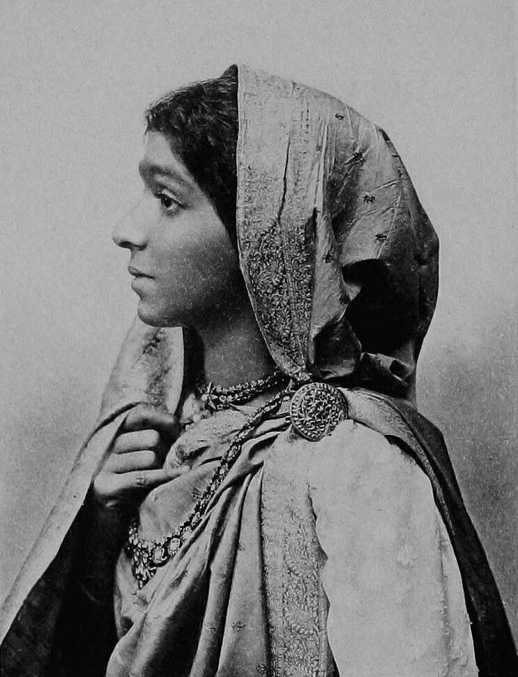

Sarojini Naidu
13 February 1879 – 2 March 1949
The Nightingale of India
Early Life
Born in Hyderabad to a Bengali Brahmin family of scholars, Sarojini was a prodigy who wrote poetry in English from age 12. Her talent earned her a scholarship to study at King's College London and Girton College, Cambridge.
Poet
Her poetry collections — The Golden Threshold (1905), The Bird of Time (1912), and The Broken Wing (1917) — earned her the title "Nightingale of India." Her verses are known for their lyrical beauty and vivid imagery of Indian life.
Freedom Fighter
Sarojini joined the freedom movement in 1905 and became a close associate of Mahatma Gandhi. She led the Dharasana Satyagraha (1930), participated in the Quit India Movement (1942), and was imprisoned multiple times. She became the first Indian woman president of the Indian National Congress in 1925.
Governor
After independence, she was appointed the first woman governor of India (Governor of the United Provinces, now Uttar Pradesh) in 1947, a role she held until her death in 1949.
Legacy
Sarojini Naidu's life demonstrates the power of combining artistic expression with political activism. She remains an inspiration for women in politics and literature across India.